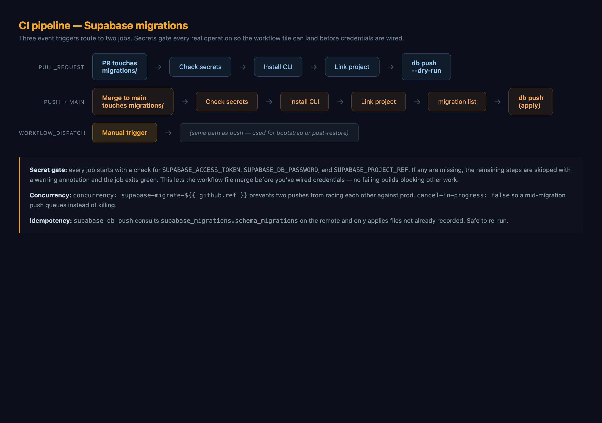
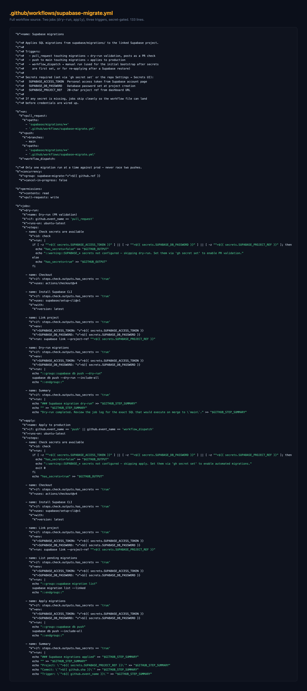
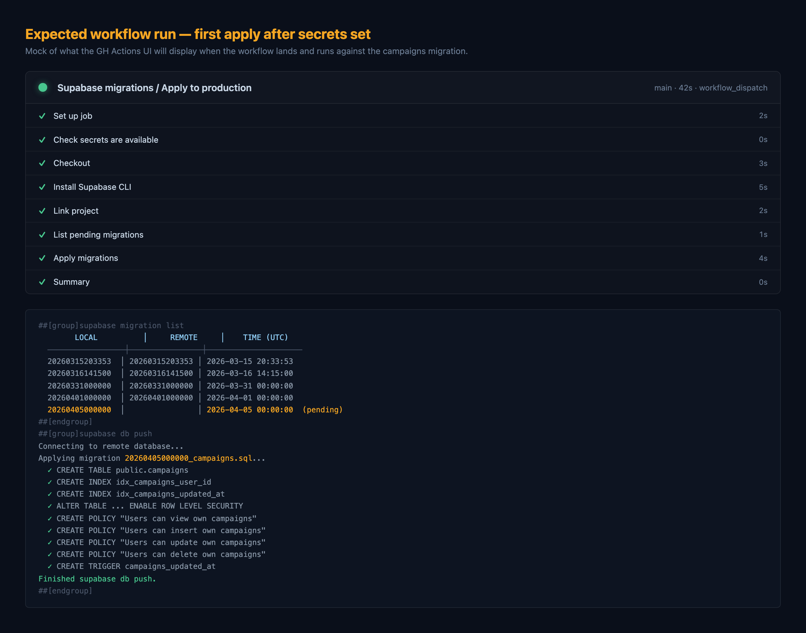
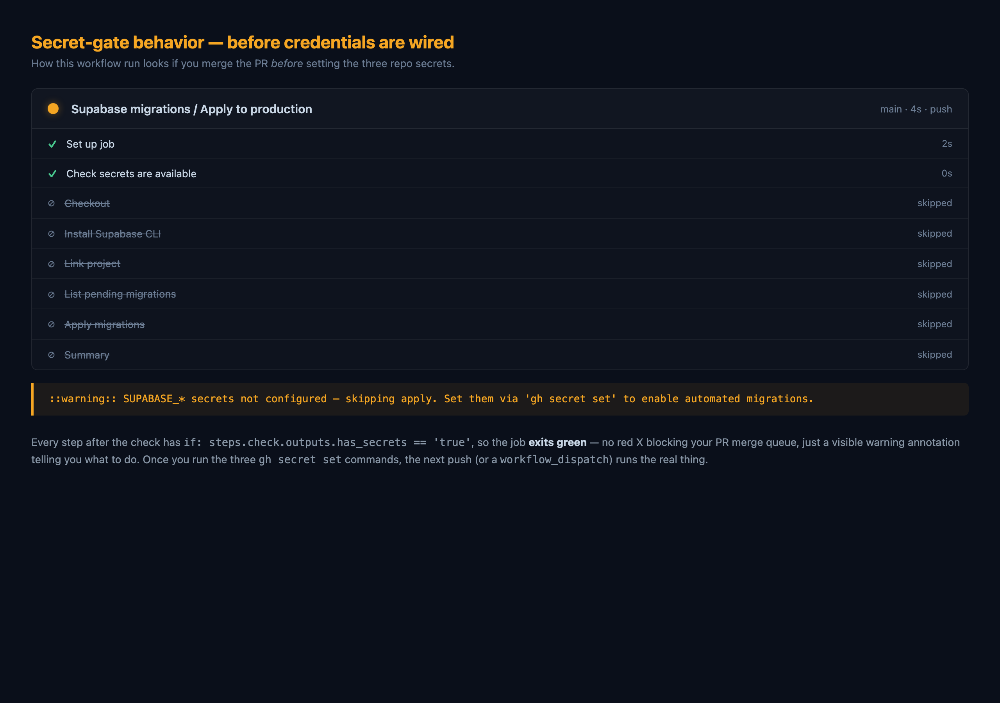

PR #84 · Refs #84 · Infrastructure — no runtime surface
Until now, every Supabase SQL migration in supabase/migrations/ has been applied by hand in the dashboard — fragile, easy to forget, no PR-time validation. This PR adds a GitHub Actions workflow that validates on PR and applies on merge, with a secret-gate so the workflow can land before credentials are wired up.

ss-01 — Three triggers, two jobs, secret-gated. Dry-run on PRs, apply on merge or manual dispatch.
The full .github/workflows/supabase-migrate.yml (133 lines). Every real step is guarded by if: steps.check.outputs.has_secrets == 'true'.

ss-02 — Full workflow source.
What the GH Actions UI will display on the first real apply, once secrets are configured. The outstanding 20260405000000_campaigns.sql from #83 will apply as the first migration the pipeline ever runs against prod.

ss-03 — Mock of the first apply. migration list output shows the pending campaigns migration, then db push applies it with the full set of DDL from the .sql file.
This is the deliberate design choice that makes this PR safe to merge immediately: if secrets aren't set yet, every substantive step is skipped and the job exits green with a warning annotation. No blocking red X on the merge queue, just a visible reminder.

ss-04 — What the run looks like on the first push after merge, if secrets haven't been set. Green overall, loud warning.
| File | Purpose |
|---|---|
.github/workflows/supabase-migrate.yml | New workflow — dry-run job on PR, apply job on push-to-main and workflow_dispatch |
supabase/README.md | Flow docs, secret setup, migration history table |
.env.example | Documents the three CI-only secrets and where to get them |
gh secret set: SUPABASE_ACCESS_TOKEN, SUPABASE_DB_PASSWORD, SUPABASE_PROJECT_REF.gh workflow run "Supabase migrations". This applies the outstanding 20260405000000_campaigns.sql from #83.campaigns table exists in Supabase, RLS policies active, smoke test cross-device sync.supabase/migrations/ applies automatically on merge.